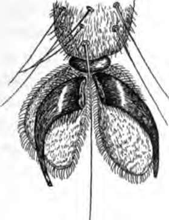
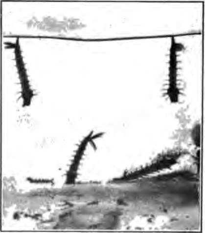

Chapter XX. How To Keep Well
Description
This section is from the book "The Human Body And Health", by Alvin Davison. Also available from Amazon: The Human Body and Health.
Chapter XX. How To Keep Well
Healthy Living
Eating the proper kind of food, and chewing it thoroughly, taking plenty of exercise, and breathing deeply fresh air, are great aids in keeping the body strong and well. Good habits and cheerfulness invite health and happiness. Unless care is used, however, some of the germs of disease are likely to get into the body, and then they may grow, and cause sickness.
Fighting Our Enemies
In pioneer days, the foe of life was Indians and wild beasts. To-day it is the countless unseen life that makes human flesh its prey. Safety lies only in making ourselves the conquerors.
There are three kinds of warfare used in fighting germ diseases. One kind is to destroy the harmful germs in the excretions leaving the body. A second plan is to stop the disease germs scattered about by careless people, from entering the body. A third means of keeping away disease is to develop substances in the body able to kill the unfriendly germs entering.
Destroying The Cause Of Disease
Until 1890 but little attention was given to the several means of preventing sickness. A sure method of restraining criminals from robbing and killing, is to keep them shut up in prisons, or kill them. Likewise a certain method of preventing deadly germs from robbing some citizens of health and killing others, is to destroy the germs when they leave the body of the sick.
Fig. 142. The foot of a fly showing the hairs to which thousands of germs cling to be carried to food over which the insect walks. Much enlarged.
It is in the spit, and the bowel and kidney excretions that the harmful germs generally escape from a patient. For this reason all waste matter from the sick should be so treated as to kill the germs in it. This may be done by adding to it an equal amount of 5% formalin or a large quantity of boiling water. Any germ killer is called a disinfectant. The killing of germs is disinfecting. Carbolic acid, sunshine, and cresol are disinfectants. The time required for the disinfectant to kill the germs is about two hours.
How Carelessness Destroys Health
Nearly three hundred thousand cases of typhoid fever occur annually in this country, resulting in about forty thousand deaths. Three fourths of this suffering and loss of life is due to negligence in permitting the living typhoid germs in the excretions of the sick to escape into the streams, wells and soil. Flies are known to carry on their feet and scatter over food the disease germs allowed to escape from the bodies of patients.
When, a few years ago, less than a thousand human beings, on a vessel near New York, lost their lives through the carelessness of others, the whole country was aroused and demanded that those who neglected their duty should be punished. Every year more than one hundred thousand men, women and children lose their lives, because others neglect their duty to kill the deadly germs passing from the bodies of those sick with contagious diseases.
The farmer can get no wheat unless he sows the seed, and it is equally true that there can be no germ diseases unless the germs are sown by the sick. It should be remembered that the disease germs often continue in the waste given off by the sick for a month or more after recovery. This is especially true of diphtheria and typhoid fever.
Caring For The Sick
A person suffering from a contagious disease should not mingle with well persons. He should be placed in a large airy room shut off from the rest of the house as much as possible and exposed to the sun, which is the best of germ killers. The hangings and carpets and all unnecessary furniture should be removed. Only the nurse and doctor are to be allowed to enter the room. No clothing, dishes, or other articles should be taken from the room without being soaked in boiling water, or other germ killer like 5% formalin.
Care Of The Sick Room
After touching a patient, or handling his clothing, the hands should be thoroughly washed with hot water and soap. The clothing and dishes used about the sick must be boiled. Toys handled by a scarlet fever patient have been known to give the disease to others more than a year later. The room should not be swept, but wiped up daily with a cloth wrung out in a quart of water to which a half-pint of 5% formalin has been added. Screens should be used to prevent the entrance of flies which may distribute the disease germs.
When the patient has recovered, his entire body, including the hair, should be well washed with hot water and soap. As soon as the patient has left the room, it should be disinfected by the health officer, or some other person who understands the use of formalin.
Aid From The Board Of Health
In every city and community there are several persons appointed by law to act as a board of health. It is their duty to help the people to keep well. One of their number is chosen as health officer. He should be notified by a family, or their physician, when any contagious disease occurs in their house. He will then, free of charge, help them to keep the disease from spreading and disinfect the house when the patient has recovered. All directions given by the health officer should be carefully obeyed.
Keeping The Germs Out Of The Body
With great care it is possible to keep out of the body the agents causing at least five of the germ diseases. The bacteria responsible for dysentery, cholera infantum and typhoid fever, may generally be avoided by keeping flies away from the food, and by drinking from clean vessels water or milk known to be pure, or by heating these fluids up to the boiling point. It is better to pasteurize questionable milk.

Continue to: